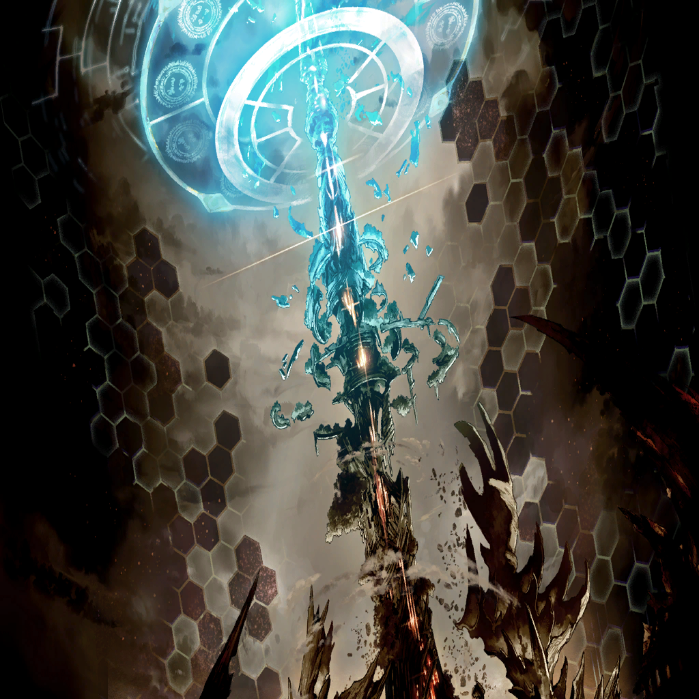
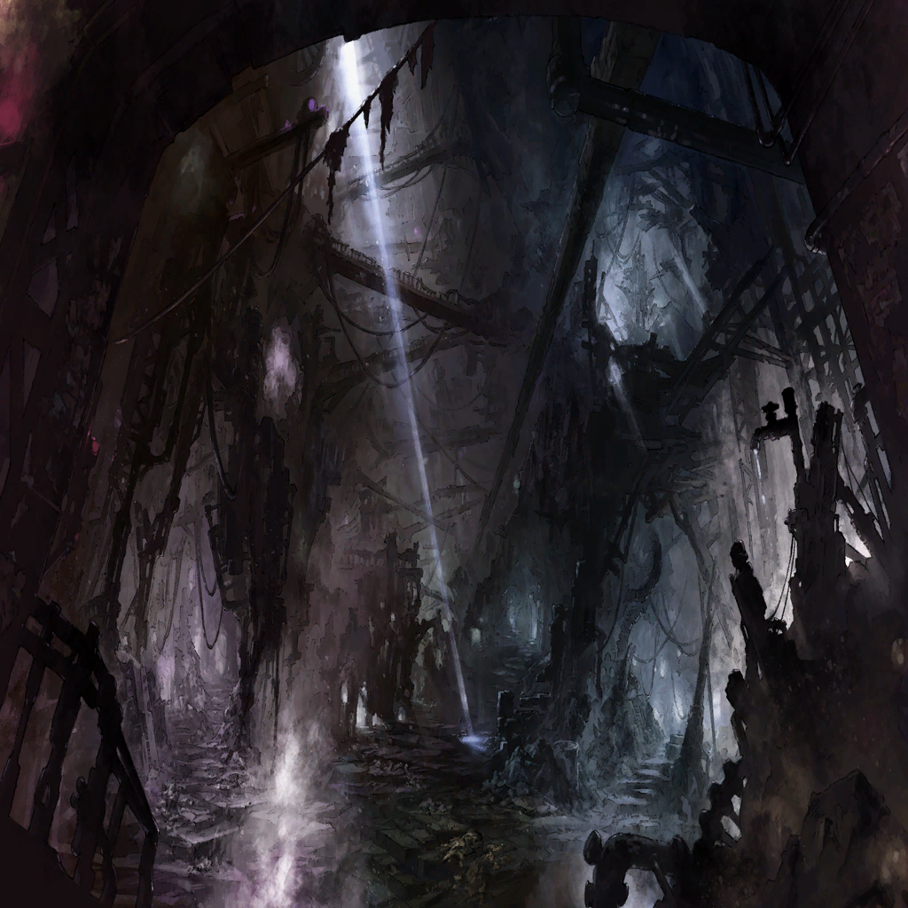

|
|

ネロ |
…もう、失敗は怖いのだ |
| |
『“ロストブルーに”力が欲しい』 |
ネロ |
欲しがり、与えられ
初めて識る己の業の深さ… |
| |
『お前の人間への絶望はわかる
だから、もう一度だけでいい』 |
ネロ |
人は神を信じるが
神は人を信じぬ |
| |
『ロストブルーにチャンスをくれないか
俺たちに力をくれないか』 |
ネロ |
期待できぬ勝利に
かけるものなど―― |
| |
『逆転劇は痛快だろ？』 |
|  |
ネロ |
…………ヴァーニル |
ネロ |
聲をかけ…
力を与える…
もう一度だけ… |
ネロ |
もう、失敗は怖い |
ネロ |
…失敗して欲しくも、ないのだ |
|  |
| ニヒル |
胸焼けしそうだ… |
| 研究者 |
まあ聞け。神経接続と音声認識の並行で
あらゆる状況に対応できる、武装も満載！
遠近両用、攻防一体、重装万歳！ |
| ニヒル |
うっげぇ
そもそもちゃんと動作するのか？
あんなゴテゴテしたやつで… |
| 研究者 |
無理矢理接続しても
当人の脳波によるからねえ |
| ニヒル |
“やる気”がなきゃ無理ってこと？ |
| 研究者 |
ま。アンタみたいな
技術発展に懐疑的なヤツじゃあ
到底扱えんシロモノだろうよ |
| ニヒル |
… |
| 研究者 |
そう急がなくてもいいだろうに |
| ニヒル |
…………ところでアンタさ
あのガキ、わかる？ |
| 研究者 |
…あー。裏じゃあ有名だね
お前さんが買ったのかい |
| ニヒル |
んな悪趣味じゃねえ |
| 研究者 |
…同じ人間だと
思われちゃいないんだろうねえ |
| ニヒル |
ついてくんな |
| アム |
はい |
| ニヒル |
いいかチビ
俺はガキと女と獣が
大ッ嫌いなんだよ |
| アム |
はい |
| ニヒル |
ついてくんな！ |
| アム |
はい |
| ニヒル |
いや！ マジ！ おい！ |
| アム |
はい |
| ニヒル |
餌づけしたつもりはねえぞ…
ただ、あの日はちょっと
色々と…あった日で、だなあ |
| ニヒル |
ひとりでメシ食うのが、なんだ、え～
気が進まなかっただけで… |
| アム |
ごちそうさまでした |
| ニヒル |
…ハラ減ってんのか |
| アム |
… |
| アム |
いいえ |
| ニヒル |
メシ、行きてえのか |
| アム |
いただきます |
| ニヒル |
ハラ減ってんじゃねえか！ |
| アム |
いいえ |
| ニヒル |
ちゃんと話せよぉ
思ったことをよぉ |
| アム |
…………努力します |
| ニヒル |
がめつい金貸しがいてさ
ここに、ちょっと前までは |
| ニヒル |
でけえ金庫、残してった
開け方は教えてもらったからよ
ここには… |
| ニヒル |
盗られたくねえもん、入れてんだ |
| アム |
…………じゅるり |
| ニヒル |
ああ。そうだよ。メシとかな |
| アム |
ぱくぱくぱくぱくぱくっ
もぐっ、ぐぐっ、んんっ、ごくん！
がぶりっ、もくもく、もしゃもしゃ！ |
| ニヒル |
… |
| アム |
ずるずる。ぷるん。くちゃくちゃ
さくっ、ざくざくざくっ、もりもりもり…
ぺろぺろ、じゃくじゃくじゃくっ、こくり！ |
| ニヒル |
…すげえ食うよな |
| アム |
バリバリバリッ
ガリッ、ガリッ、ガリッ、ガツガツガツ！
ボリボリボリボリ！ ポリポリポリポリ… |
| アム |
けぷ |
| ニヒル |
…うまいか？ |
| アム |
はい |
| ニヒル |
…どう、うまいんだ？ |
| アム |
… |
| ニヒル |
食ったら、行けよ。どっか |
| アム |
………… |
| アム |
…血の味がしません |
| ニヒル |
…………ん、んん？ |
| アム |
…ごはん、いつも、足りませんでした |
| ニヒル |
…血が飲みたかったのか？ |
| アム |
お腹、いつも減ったままで
のどもからから…
お水も汚かったから… |
| アム |
死体の血でも、飲んでろって言われて
その通りにしたら、笑われて |
| ニヒル |
…ああ |
| アム |
そしたら、そうしたら
いつも一緒のビアンカが
自分の血をくれるって言うんです |
| アム |
『いいえ』って言ったんです
痛いのに、むず痒いし、気持ち悪いのに
ビアンカ…『いいよ』って言ってくれました |
| アム |
別に、私、は…
血が飲みたか、ったわけじゃない、のに
お腹も、減って、ぺこぺこだったから… |
| ニヒル |
…いい友達だな |
| アム |
ありがと…言いたか、ったの、に
ごめんって、言いたくて、なのに… |
| ニヒル |
…一緒に言いに行くか？ |
| アム |
泣き声を聞きつけられて奴隷にされ、て
笑い声を聞か、れて、罰、が、増えて |
| アム |
怒ればバカにされて、何を話しても
『言い訳』だ、『口答え』だと言われて… |
| アム |
お礼を言っても謝っても主様は
『媚びる姿が気持ち悪い』と… |
| ニヒル |
…………何言っても… |
| アム |
闘えば
ビアンカもイヤなことされないから…
ほかにできることなんてないから…っ |
| アム |
でも、もう、何も、言えないまま…
おわかれ…おわかれ、して…………私 |
| アム |
あっ、ううっ、びあんかっ…………
ありがっ、と…ごめっ、ううっ、あああ…！ |
| ニヒル |
………… |
| アム |
ちーん |
| ニヒル |
ウワッ!? おま、お前マジか!?
普通さァッ!? 俺のコートで鼻かむ!?!?
黒いんだから白く残るだろうがお前ぇぇ!!!! |
| アム |
うっ、ぐずずっ |
| ニヒル |
チビがッッ!!!! |
| アム |
…アムです |
| ニヒル |
あ!? |
| アム |
アム、です。私の名前… |
| ニヒル |
チビガキ！ |
| ネズミごろし |
あの。ニヒル |
| アム |
！ |
| ニヒル |
…ああ
ナインデッドの様子は？ |
| ネズミごろし |
まだ起きないの…ずっと起きない…
わたしを庇って、ヴェーダでケガ…
いっぱいしちゃったから、たぶん、まだ… |
| ニヒル |
…そうか |
| アム |
け、も、の…？ |
| ネズミごろし |
…？ |
| アム |
は、い。はい |
| ニヒル |
おい、チビ――!? |
| |
『お待ちかねの皆様
お待たせ致しました!!!!』 |
| アム |
ころ、せ…こ、ろせ |
| |
『人も獣も何するものか！
純情可憐！ 苛烈にして激烈！
惨殺命令、無心で服従！』 |
| ニヒル |
おい…？ |
| |
『闘獣人造乙女アム!!!!』 |
| ネズミごろし |
え、え…!? |
| ネズミごろし |
ああああっっ!?!? |
| |
『アム！ アム！ アム！ アム！』 |
| ニヒル |
…メシ、ひっくり返っちまったじゃねえか |
| アム |
…いいえ。はい。努力します |
| ニヒル |
後片づけまでが食事だぞ、ガキ |
| |
『死ね！ 殺せ！ 死ね！ 殺せ！
死ね！ 殺せ！ 死ね！ 殺せ！
死ね！ 殺せ！ 死ね！ 殺せ！』 |
| アム |
闘獣…アム、ころ、し、ね |
| ニヒル |
刷り込みかよ…っ |
| ネズミごろし |
…この子 |
| ニヒル |
はぁ…だからガキと女と獣は |
| ネズミごろし |
…だいきらい？ |
| ニヒル |
“女に手を上げるヤツは
犬のクソにも劣る” |
| ネズミごろし |
じゃあニヒルは
犬のクソ以下になっちゃうよ？ |
| ニヒル |
だからイヤなんだよ
もともとクソ以下なのに |
| ネズミごろし |
正当防衛じゃない？ |
| ニヒル |
それでいこう |
| アム |
…！ |
| ネズミごろし |
ごめんね、そういうわけだから |
| ニヒル |
『こじつけじゃねえかクソ』とか
『屁理屈じゃねえかクソ』とか
『メシマズかったぞクソ』とかなんでもいい |
| ニヒル |
文句あるなら、言ってみろ |